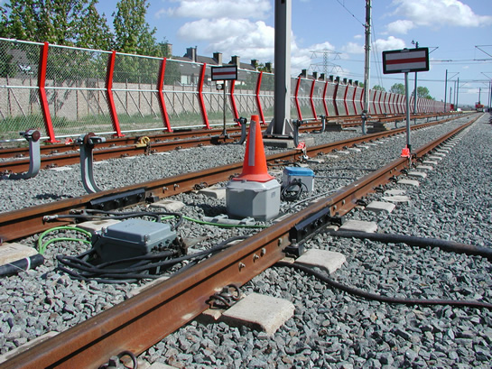

Dit weekeinde aansluiting Nesselandelijn en meer...
- maandag 08 december 2008 09:16
- Geschreven door Joachim
Komend weekeinde wordt de Nesselandelijn aangesloten op het huidige sneltramtracé. Dit houdt in dat de spoorbeveiliging in werking wordt gesteld en getest wordt. Door de werkzaamheden, die zaterdagmorgen om 01.00 uur al beginnen, is er geen metroverkeer mogelijk tussen de stations Nieuw Verlaat en De Tochten v.v. Er worden daarom bussen ingezet.

In het komend weekeinde wordt de Nesselandelijn aangesloten. Dit betekent dat de Siemens-spoorbeveiliging aangepast wordt, en de Alstom-spoorbeveiliging in dienst wordt gesteld.
Er zijn extra medewerkers van de RET aanwezig op de stations De Tochten en Ambachtsland om reizigers te verwijzen naar de pendelbussen. Dit is ook het geval op station Nieuw Verlaat, tijdens het weekeinde tijdelijk eindpunt van de Zevenkamplijn.
De bedoeling is dat op maandag 13 juni a.s. het testbedrijf begint. Dit testbedrijf loopt door tot en met vrijdag 8 juli. Het nieuwe tracé naar Nesselande wordt dan getest op alle technische eigenschappen zoals stroomvoorziening en spoorbeveiliging.
Op zaterdag 9 juli begint het proefbedrijf. Dit houdt in dat er continue gebruik wordt gemaakt van het tracé, tijdens de exploitatie. Eventuele storingen en kinderziektes kunnen dan verholpen worden. Dat gebeurt zeven dagen per week. Passagiers kunnen dan nog niet mee, dat is pas het geval wanneer de winterdienst ingaat: augustus 2005.
Bovenleiding
Afgelopen anderhalve week is een ploeg van RET Infra bezig geweest met het aanleggen van bovenleiding op een klein deel van het nieuwe tracé tussen stations De Tochten en Nesselande. Dit gebeurde met bovenleidingwagen 2038 van afdeling Tram. Waar destijds de uitloopsporen lagen, loopt het sneltramspoor in combinatie met een derde rail nog enkele honderden meters door. De extra meters bovenleiding zijn nodig om voldoende tijd te hebben om al rijdend van sneltrambedrijf naar metrobedrijf om te schakelen.
 Bekijk nieuwsitem over bovenleidingwagen 2038 in actie
Bekijk nieuwsitem over bovenleidingwagen 2038 in actie
Locomotief 6102
Locomotief 6102 is sinds enkele dagen weer terug op het metronet. Enkele jaren stond de 6102 op het buitenterrein van CW Kleiweg te verroesten. In 2004 besloot de RET de 6102 en de rest van de vloot locomotieven op te knappen. De 6102 is als eerst uit de revisie gekomen en verblijft momenteel op remise Waalhaven. Locomotief 6101 verblijft, evenals de railslijpwagen 7201, nog op CW Kleiweg voor een revisie.
Werkonderbreking
Donderdag 9 juni vindt er een landelijke staking plaats in het openbaar vervoer. Dit komt doordat eerdere CAO-onderhandelingen vastliepen. Ook het personeel van de RET doet mee aan de landelijke staking en legt daarom het werk neer tussen 10.00 uur 's ochtends en 13.00 uur 's middags. Er rijden tussen deze tijden geen trams, bussen en metro's. De verwachting is dat vervoer van de RET rond 14.00 uur weer volgens de dienstregeling zal rijden.